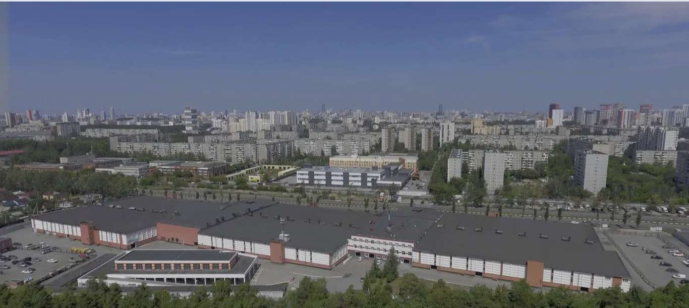

Гаражно-строительный кооператив в Екатеринбурге с 1989 года.
Гаражно-строительный кооператив расположен на охраняемой территории площадью 5,4 гектара и насчитывает 3175 объектов недвижимости.

Платежи онлайн, заявки в службу сервиса и новости кооператива — на одном сайте.